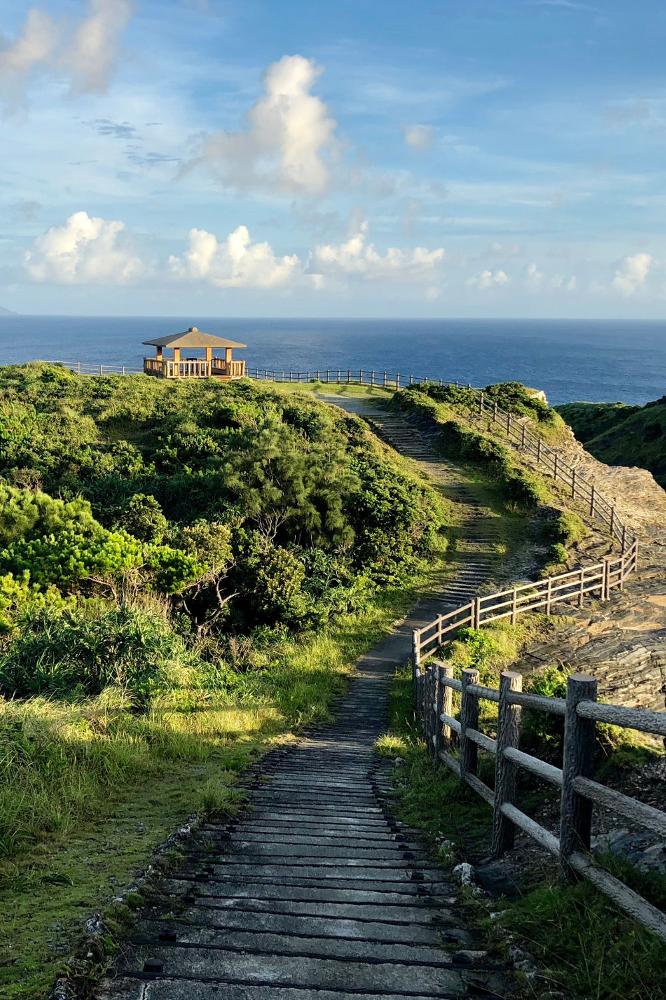
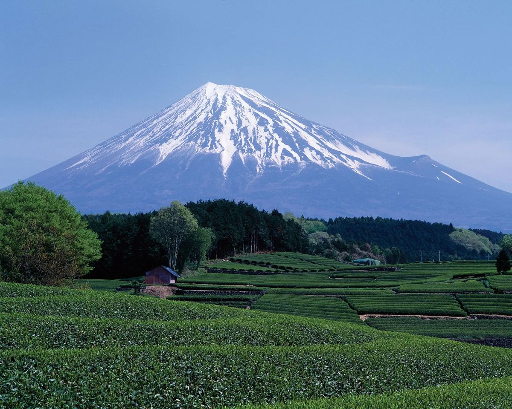
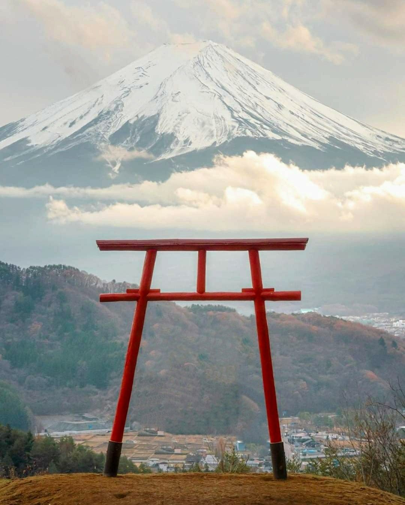

EXPLORING THE RELATIONSHIP BETWEEN REGIONAL SOIL COMPOSITION AND NATIVE PLANTS ACROSS JAPAN. FROM HONSHU'S ALLUVIAL PLAINS TO HOKKAIDO'S VOLCANIC EARTH AND OKINAWA'S CORAL-BASED SOILS, EACH REGION NURTURES UNIQUE VEGETATION.